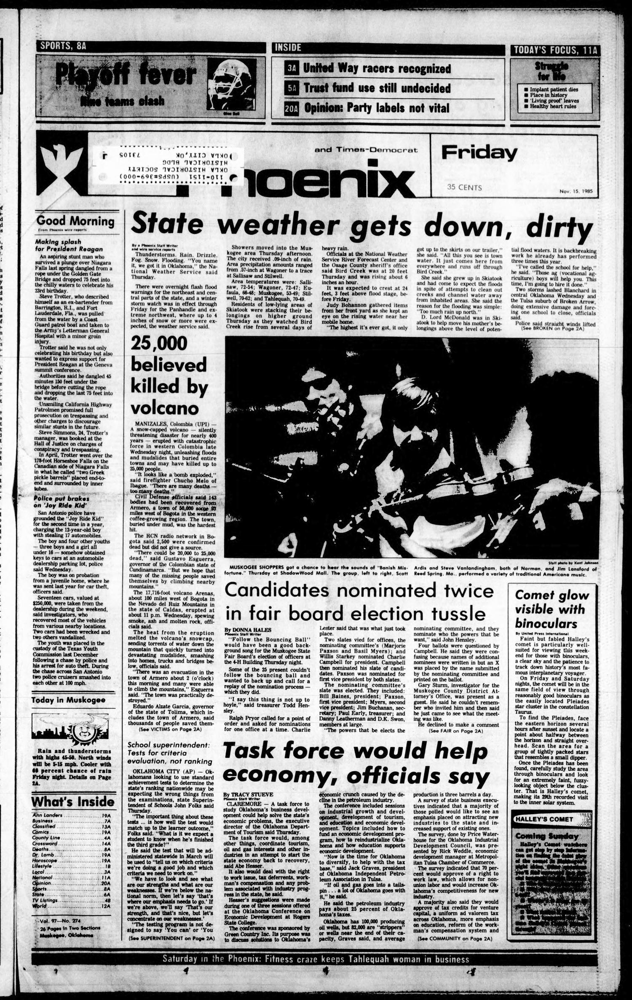

HN HN-756 · November 15, 1985 · Disasters, Accidents & Emergencies > Earthquakes & Volcanic Disasters > Seismic and volcanic hazards
Armero LA Times 15 Nov 1985 appended 16 Nov correction to the name of a Colombian newspaper.
Source: Banner-Graphic, p. 2 — original page; USGS volcanic-disaster history.
Report: A dispatch described survivors struggling through mud, widespread destruction of Armero, hundreds of bodies found, and an official fear of 20,000 dead.
Assessment: A fearful projection rather than a confirmed roster. The later USGS account places the catastrophe's toll at over 25,000 across the region. The paper captures the human rescue conditions without settling all warning-system or evacuation failures.
Identity-review candidate peers: HN-757:Algorithmic
Class: Revision/retraction (R)
Recorded difference/concern: Armero LA Times 15 Nov 1985 appended 16 Nov correction to the name of a Colombian newspaper.
Assessment: A published editorial correction, not a second death figure; death estimates remained fluid.
Source links: https://www.latimes.com/archives/la-xpm-1985-11-15-mn-2421-story.html https://www.washingtonpost.com/archive/politics/1985/11/16/ill-equipped-rescuers-dig-out-volcano-victims/b65bbdda-9953-40e6-9b15-b0a604ae052a/ https://gateway.okhistory.org/ark:/67531/metadc2642021/m1/1/ocr/
Authentic images retrieved from Gateway to Oklahoma History (Oklahoma Historical Society). Article crops are located using the archive's own OCR word coordinates and rendered at native crop resolution; article clips are assembled from the archive's own article-block images; page scans are reduced-size access renditions. No images were generated, mocked, or retouched.

Not yet acquired. Queued for provider-specific acquisition testing (see source-acquisition manifest).
URL (preserved verbatim): https://newspapers.library.in.gov/?a=d&d=BG19851115.1.2
Saved research report: Historical_Newspaper_Event_Research_753-777_2026-10-23.md
Evidence note: A newspaper report means a historical publication made a claim; it does not establish that claim as fact. Contemporary reporting is separated from later scholarly context and our own assessment.